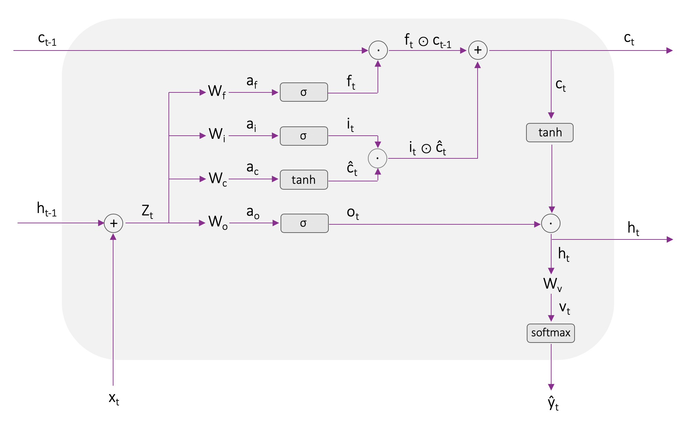

Vanilla LSTM implementation from scratch with Numpy#
This notebook was borrowed from Christina Kouridis’ github. The notation is different than the notation used in the LTSM section of the notes and will be changed in a next version of this page.

1. Imports#
import matplotlib.pyplot as plt
2. Data Preparation#
data = open('HP1.txt').read().lower()
chars = set(data)
vocab_size = len(chars)
print('data has %d characters, %d unique' % (len(data), vocab_size))
data has 442743 characters, 54 unique
# creating dictionaries for mapping chars to ints and vice versa
char_to_idx = {w: i for i,w in enumerate(chars)}
idx_to_char = {i: w for i,w in enumerate(chars)}
3. Load and run model#
%run model.py
model = LSTM(char_to_idx, idx_to_char, vocab_size, epochs = 10, lr = 0.0005)
J, params = model.train(data)
**********************************
Gradient check...
--------- Wf ---------
Approximate: 6.608047e-07, Exact: 6.708106e-07 => Error: 7.514107e-03
--------- bf ---------
Approximate: 2.633776e-03, Exact: 2.633798e-03 => Error: 4.216239e-06
--------- Wi ---------
Approximate: 8.477485e-05, Exact: 8.475261e-05 => Error: 1.312088e-04
--------- bi ---------
Approximate: 9.355979e-03, Exact: 9.356054e-03 => Error: 3.980944e-06
--------- Wc ---------
Approximate: 1.252388e-03, Exact: 1.252374e-03 => Error: 5.697213e-06
--------- bc ---------
Approximate: 1.957092e-01, Exact: 1.957092e-01 => Error: 9.097833e-08
--------- Wo ---------
Approximate: -5.551470e-05, Exact: -5.555945e-05 => Error: 4.028688e-04
--------- bo ---------
Approximate: 3.103146e-03, Exact: 3.103142e-03 => Error: 7.127713e-07
--------- Wv ---------
Approximate: -8.635432e-03, Exact: -8.635416e-03 => Error: 9.484996e-07
--------- bv ---------
Approximate: 5.721567e-02, Exact: 5.721565e-02 => Error: 1.470967e-07
Test successful!
**********************************
Epoch: 0 Batch: 0 - 25 Loss: 99.72
*\,?(-u1\*,j “j
e5o;'xpn\k.vmle2\mxh?r.c'u?.,81b"k0vugt7*–e.,h
t“(!“27y36h?2:;b0s7s
mmk26d.e? g914q0q19-z\i*33!~.k3–8u7––7jg2w:ody*
8ih1-w"s~!etw““-nxh2)l“d2–8(y-\l;“t?l8twoudg5 2.f06u6bk4x“*d*.y"“1o1;o84mm-
“!.\'j4e,h3c61v\m8dl–
7tu7?-bmtbkhx'w:i)
Epoch: 0 Batch: 400000 - 400025 Loss: 47.75
clyed you the sliele hagry," he!. the warled and had ofe stare furivhe the tharra you hasree boogkn. cropell, i mus be's bo davely tolcbebone.
hin how soued hamryed, "sonyerey, wome de at- thew tes the alled and hag. he peooled the poand de jady a m
Epoch: 1 Batch: 0 - 25 Loss: 47.36
ling -- pouk -- where the weel fleverone's it rus -- wasty mawtid, mifelaaie..
"over shid at if ar denecly helm, and gecmuln townting."
"wis as, noken't deinted at, abd be to kourrs hudr it he mandy stare. harry. ""so lantweres. s a bromer, yuu
Epoch: 1 Batch: 400000 - 400025 Loss: 42.24
as ant paye, snapped of four fage they no blyight the thind, and hermawe. he sain sulkentappeftson mishat," he was nepturts.
"moxed his moming ally a compone over the one, he mached and bith aniched bolfot. you. asly of of is a seed goor farte all
Epoch: 2 Batch: 0 - 25 Loss: 42.41
mobepsort."
"do bat at insotied notaree thone bighle or have there you mound fud the harry's about in sleen, novin, lacked!" round doon! noth, a pais, mely, a firiben stod ere, en year out humroring..."
masly."?
ehe ressmot at pe-miree -- go a
---------------------------------------------------------------------------
KeyboardInterrupt Traceback (most recent call last)
Cell In[8], line 3
1 model = LSTM(char_to_idx, idx_to_char, vocab_size, epochs = 10, lr = 0.0005)
----> 3 J, params = model.train(data)
File /workspaces/artificial_intelligence/artificial_intelligence/aiml-common/lectures/rnn/lstm/model.py:300, in LSTM.train(self, X, verbose)
297 if epoch == 0 and j == 0:
298 self.gradient_check(x_batch, y_batch, h_prev, c_prev, num_checks=10, delta=1e-7)
--> 300 self.clip_grads()
302 batch_num = epoch * self.epochs + j / self.seq_len + 1
303 self.update_params(batch_num)
File /workspaces/artificial_intelligence/artificial_intelligence/aiml-common/lectures/rnn/lstm/model.py:79, in LSTM.clip_grads(self)
75 """
76 Limits the magnitude of gradients to avoid exploding gradients
77 """
78 for key in self.grads:
---> 79 np.clip(self.grads[key], -5, 5, out=self.grads[key])
80 return
File <__array_function__ internals>:180, in clip(*args, **kwargs)
File /workspaces/artificial_intelligence/.venv/lib/python3.11/site-packages/numpy/core/fromnumeric.py:2154, in clip(a, a_min, a_max, out, **kwargs)
2085 @array_function_dispatch(_clip_dispatcher)
2086 def clip(a, a_min, a_max, out=None, **kwargs):
2087 """
2088 Clip (limit) the values in an array.
2089
(...)
2152
2153 """
-> 2154 return _wrapfunc(a, 'clip', a_min, a_max, out=out, **kwargs)
File /workspaces/artificial_intelligence/.venv/lib/python3.11/site-packages/numpy/core/fromnumeric.py:57, in _wrapfunc(obj, method, *args, **kwds)
54 return _wrapit(obj, method, *args, **kwds)
56 try:
---> 57 return bound(*args, **kwds)
58 except TypeError:
59 # A TypeError occurs if the object does have such a method in its
60 # class, but its signature is not identical to that of NumPy's. This
(...)
64 # Call _wrapit from within the except clause to ensure a potential
65 # exception has a traceback chain.
66 return _wrapit(obj, method, *args, **kwds)
File /workspaces/artificial_intelligence/.venv/lib/python3.11/site-packages/numpy/core/_methods.py:160, in _clip(a, min, max, out, casting, **kwargs)
157 return _clip_dep_invoke_with_casting(
158 um.maximum, a, min, out=out, casting=casting, **kwargs)
159 else:
--> 160 return _clip_dep_invoke_with_casting(
161 um.clip, a, min, max, out=out, casting=casting, **kwargs)
File /workspaces/artificial_intelligence/.venv/lib/python3.11/site-packages/numpy/core/_methods.py:114, in _clip_dep_invoke_with_casting(ufunc, out, casting, *args, **kwargs)
112 # try to deal with broken casting rules
113 try:
--> 114 return ufunc(*args, out=out, **kwargs)
115 except _exceptions._UFuncOutputCastingError as e:
116 # Numpy 1.17.0, 2019-02-24
117 warnings.warn(
118 "Converting the output of clip from {!r} to {!r} is deprecated. "
119 "Pass `casting=\"unsafe\"` explicitly to silence this warning, or "
(...)
122 stacklevel=2
123 )
KeyboardInterrupt:
4. Plot results#
plt.plot([i for i in range(len(J))], J)
plt.xlabel("#training iterations")
plt.ylabel("training loss")
Text(0, 0.5, 'training loss')